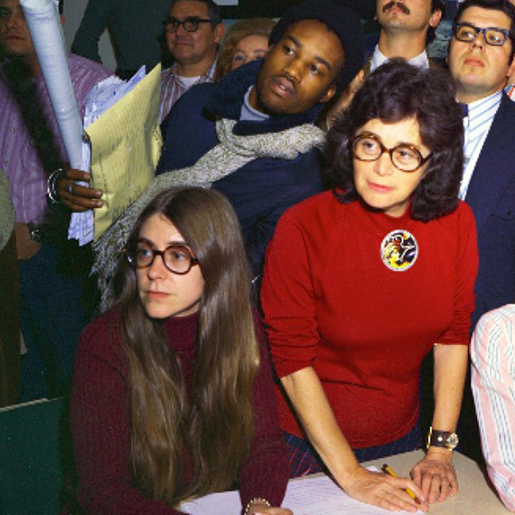

Margaret Heafield Hamilton
American computer scientist

Here's a timeline of Margaret Hamilton's life:
- 1936 - She's born in Paoli, Indiana, USA
- 1958 - Earns a B.A. in mathematics with a minor in philosophy from Earlham College
- 1960 - Takes a position at MIT to develop software for predicting weather on the LGP-30 and the PDP-1 computers
- 1961 - Starts working on the SAGE Project at Lincoln Lab
- 1976 - Co-founds a company called Higher Order Software to further develop ideas about error prevention and fault tolerance emerging from her experience at MIT
- 1986 - Awarded the Augusta Ada Lovelace Award by the Association for Women in Computing
- 2003 - Receives the NASA Exceptional Space Act Award for scientific and technical contributions
- 2009 - Receives the Outstanding Alumni Award by Earlham College
- 2016 - Awarded the Presidential Medal of Freedom by U.S. President Barack Obama for her work leading the development of on-board flight software for NASA's Apollo moon missions.
Gallery

"Looking back, we were the luckiest people in the world. There was no choice but to be pioneers; no time to be beginners." Margaret H. Hamilton